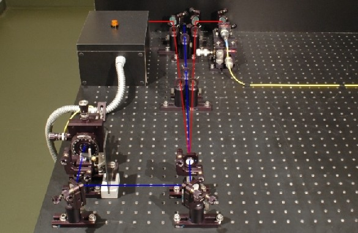
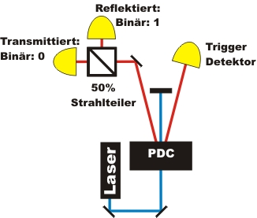

Quantenzufall Kapitel 1:
Quantenzufallsgenerator
Der Zufallsprozess des Photons am Strahlteiler kommt durch die unvorhersagbare Transmission oder Reflektion zustande. Auf der folgenden Seite wird der Quantenzufallsgenerator mit und ohne der angekündigten Einzelphotonenquelle vorgestellt.
Quantenzufallsgenerator und Photonenpaarquelle getrennt
Für den Schulunterricht in der Mittelstufe ist es zur Erklärung des Phänomens "Quantenzufall" einfacher, die Einzelphotonenerzeugung von dem eigentlichen Experiment (Abb. 1) zu trennen. Wird das Photon am Strahlteiler transmittiert, so wird das Ereignis als binäre "0" gespeichert, wird das Photon reflektiert, so wird dies als binäre "1" gespeichert (Abb. 1). Mit den binären Zahlen können Zufalls-Dezimalzahlen, Zufalls- Buchstaben oder Zufalls- Farben erzeugt werden.

Abb. 1: Quantenzufallsgenerator getrennt von der angekündigten Einzelphotonenquelle
Im folgenden Experiment kannst Du mit Hilfe von einzelnen Photonen mit einem Quantenwürfel spielen. Worin besteht nun der Unterschied zwischen dem Quantenwürfel, einem am Computer programmierten Würfel und dem realen Würfel aus der Spielesammlung? Zur richtigen Darstellung wird der neuste Flash-Player (Version 9 - Freeware) benötigt [Download].
Beobachtung und Erklärung:
Quantenwürfel: Das einzelne Photon am Strahlteiler entscheidet sich absolut zufällig, ob es reflektiert oder transmittiert wird. Hinter der Entscheidung steckt keine mathematische Rechenvorschrift (Algorithmus) oder ein anderes Prinzip. Der Quantenzufall wird als reiner oder objektiver Zufall bezeichnet.
Computerwürfel: Bei einem Computer wird der Zufall über eine Rechnung erzeugt. Grundlage für die Rechnung ist ein Startwert, der sich selten wiederholt. Ein solcher Startwert ist z. B. die aktuelle Systemzeit oder die aktuelle Bewegung der Computermaus. Wird für diese Rechenvorschrift die gleiche Startbedingung angegeben, so ist das "zufällige" Ergebnis immer gleich. Die "Zufälligkeit" der Computerzahl hängt somit nur von der Komplexität der Rechenvorschrift und von dem Startwert ab. Computergenerierte Zufallszahlen werden deshalb als "Pseudozufallszahlen" bezeichnet.
Realer Würfel: Bei einem realen Würfel aus der Spielesammlung könnte man durch eine Rechnung voraussagen, welche Zahl fällt. Für diese Rechnung müssen alle Randbedingungen genau bekannt sein: Aus welcher Höhe wird gewürfelt, wie genau verlässt der Würfel die Hand, wie groß ist die Luftreibung, welche Eigenschaften hat das Würfelmaterial beim Auftreffen des Würfels auf die Tischfläche ... . Es sind so viele Randbedingungen, dass diese Rechnung sehr kompliziert wird. In der Praxis lässt sich eine solche Rechnung nicht durchführen. Man spricht hier von deterministischem Chaos: Der Zufall entsteht auf Grund von Informationsmangel über die exakten Anfangsbedingungen unter denen dieser physikalische Prozess stattfindet. Diese Art von Zufall wird als subjektiver Zufall bezeichnet.
Sind die Messergebnisse des Quantenzufalls nun wirklich zufällig? Steckt da vielleicht doch ein Prinzip dahinter? Dies wird im nächsten Kapitel mit verschiedenen Testverfahren untersucht.
Hinweis zur Trennung des Experimentes:
In Abbildung 2 ist die vom eigentlichen Experiment getrennte Einzelphotonenquelle zu sehen. Das eine Photon (linker Zweig) wird zum Triggern genutzt. Das andere Photon (rechter Zweig) wird in das gelbe Glasfaserkabel eingekoppelt und am eigentlichen Experiment (Abb. 1) wieder aus dem Glasfaserkabel ausgekoppelt. Erst nachdem der Trigger ein Photon registriert hat, werden die beiden Detektoren nach dem Strahlteiler freigeschaltet.

Abb. 2: Angekündigte Einzelphotonenquelle durch Trigger-Detektor
Linker Zweig: Trigger-Detektor, Rechter Zweig: Einkopplung in Glasfaserkabel
Quantenzufallsgenerator mit Photonenpaarquelle
Beim folgenden Experiment ist der Quantenzufallsgenerator und die Photonenpaarquelle nicht getrennt (Abb. 3). Die Experimente Quantenzufallsgenerator und "Existenz des Photons" [klick] unterscheiden sich nur durch die Auswertung der Daten. Es wird beim Quantenzufallsgenerator nicht mehr gezählt, wie viele Ereignisse pro Sekunde auftreten, sondern in welchem Detektor das einzelne Photon registriert wurde. Wird das Photon am Strahlteiler transmittiert, so wird das Ereignis als binäre "0" gespeichert, wird das Photon reflektiert, so wird dies als binäre "1" gespeichert.

Abb. 3: Aufbau des Quantenzufallgenerators
Originaldaten aus dem Experiment: binäre Quantenzufallszahlen
Zum nächsten Kapitel: Test der Zufälligkeit, Quantenmusik nach Mozart, kommerzielle Systeme [klick]
Zurück zur Übersicht [klick]
Autor: P. Bronner, April 2008